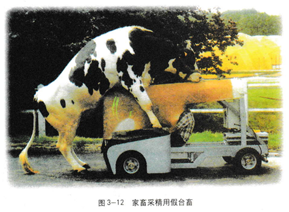

3.2 体外受精和早期胚胎培养
你听说过试管牛、试管羊吗？你知道什么是试管动物技术吗？试管动物技术是指通过人工操作使卵子和精子在体外条件下成熟和受精，并通过培养发育为早期胚胎后，再经移植产生后代的技术。发展这种技术有什么意义呢？
从试管牛说起
我国大多数牛的品种，产肉量或产奶量与国际上的优良品种相比都有一定差距。例如，我国目前每头奶牛年平均产奶量为3000 kg左右，而国际上良种奶牛年平均产奶量可达10000 kg；我国蒙古黄牛平均每头体重300 kg左右，而澳大利亚纯种海福特牛两岁时体重就可达到800 kg（图3-9）。因此，需要从国外引进优良品种，而引进一头成年牛需要3万一5万元，如此高昂的价格使得我们不可能靠大量引进良种牛来提高产量。那么，能不能让引进的良种牛快速地大量繁殖呢？遗憾的是，牛的生育率很低，一头牛一胎一般只产一头犊牛，一生约生育四五次。如何解决这个难题呢？
我们知道，牛的生育率虽然低，但是母牛体内的卵母细胞却相当多，其卵巢中的卵母细胞数要比一生中正常排出的卵子多1000倍。公牛产生的精子数量就更多了。如果能够分别采集牛的精子和卵母细胞，让它们在体外完成受精并且发育成一个个小胚胎，再将这些胚胎移植到一个个本地牛（如黄牛）体内“借腹怀胎”，不就可以实现良种牛的快速大量繁殖吗？这的确是很好的设想，但是，要将这一美好设想变成现实，又需要付出艰苦的努力，需要开发相应的技术。在这项技术中首先要做的是体外受精和早期胚胎的培养
体外受精
哺乳动物的体外受精主要包括卵母细胞的采集、精子的获取和受精等几个主要步骤。
卵母细胞的采集和培养
对于实验动物如小鼠、兔，以及家畜猪、羊等，采用的主要方法是：用促性腺激素处理，使其排出更多的卵子，然后，从输卵管中冲取卵子，直接与获能的精子在体外受精。 从屠宰场已屠宰母畜的卵巢中采集卵母细胞，也可以借助超声波探测仪、内窥镜或腹腔镜等工具，直接从活体动物的卵巢中吸取卵母细胞（图3-10）。采集的卵母细胞，都要在体外经人工培养成熟后，才能与获能的精子受精（图3-11）。活体采卵在一些畜牧业发达的国家已开始商业化生产，它对充分发挥优良母畜的繁殖潜力具有重要意义。
精子的采集和获能
收集精子的方法有假阴道法、手握法和电刺激法等。
假阴道法是采用仿生学的方法，模仿发情雌性动物阴道环境设计的装置，它能够满足雄性动物交配时对压力、温度和润滑度的要求，同时配有与采精动物相适应的活台畜或假台畜（图3-12）。使用假台畜时，要训练被采精动物爬跨台畜，并将精液射入假阴道，以便收集。
